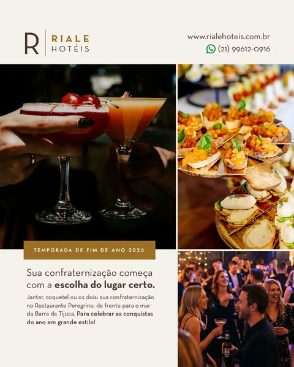
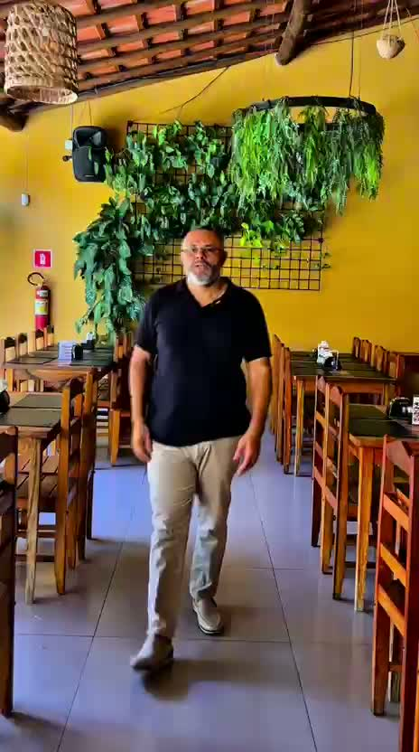

Antes de olhar as peças
Três padrões se repetem em quase todas
Independente do tamanho do lugar, as campanhas que seguram no ar usam a mesma receita. É nela que o PomerMarkt deve se apoiar.
Falam com o organizador
"Já escolheu onde?", "Ficou responsável pela festa da firma?". A peça conversa com quem tem a dor de resolver, não com a empresa no geral.
Urgência de data real
"Dezembro chega rápido e as melhores datas somem", "agenda aberta", "não deixe pra última hora". A escassez é verdadeira — e aparece em quase todas.
Mostram o que inclui + WhatsApp
Espaço, gastronomia, estrutura — listados na arte — e um CTA direto: "reserve a data", "peça seu orçamento".
As referências
9 anúncios para copiar o jeito
A etiqueta de dias no ar é o melhor sinal: quanto mais tempo rodando, mais provável que esteja dando resultado.

Boulevard Hall
93 dias no ar 🏆Ângulo · Pacotes + status
"Sua confraternização merece um espaço à altura da sua empresa."

Playball
69 dias no arÂngulo · Fuja do mesmo de sempre
"A confraternização da sua empresa não precisa ser mais do mesmo."

Espaço Tambiú
59 dias no ar vídeoÂngulo · Pergunta-gancho
"Já escolheu onde será a sua confraternização de fim de ano?"

Bosque Encantado
28 dias no arÂngulo · Urgência + festa
"As confraternizações já estão chegando. E você, já garantiu a sua?"

Riale Hotéis
26 dias no arÂngulo · Dor do organizador
"Ficou responsável por organizar a confraternização da empresa?"
Paparazzi Gold Bar
19 dias no arÂngulo · Lista do que inclui
"Agenda de fim de ano aberta. Monte sua festa do seu jeito."

Suhai Music Hall
53 dias no arÂngulo · Espaço versátil
"Um grande evento começa pela escolha do espaço certo."

Center Convention
12 dias no arÂngulo · Capacidade
"Reunir de 200 a 300 pessoas exige um espaço à altura."

Beto Assim & Assado
39 dias no ar vídeoÂngulo · Urgência + checklist
"Dezembro chega rápido e as melhores datas somem primeiro."